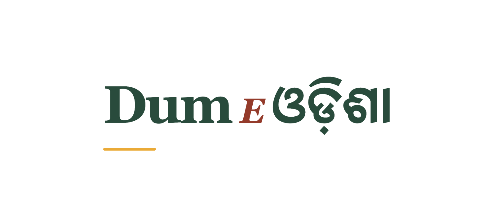

03 / A mixed-script logo experiment
The Odia ending.
The ending ଓଡ଼ିଶା gives the place name pride of place. Dum E stays in Latin; the rounded Odia forms become the memorable finish rather than a tiny translation beneath the logo.

Dum E ଓଡ଼ିଶା
Why it works
Let the place name lead.
Leaf green lets the rounded Odia forms feel considered and grounded. The Hindi-style headline is not imposed on Odia; its own marks, circles and spacing stay intact. The terracotta connector and saffron rule link it to the warm food identity.
Each experiment changes one whole name unit. Read all three as Dum E Odisha. The symbol can sit alongside the name or work alone.


An alternative without the illustration
Let the lettering
carry the identity.


Script comes before decoration.
The artwork uses local Noto Serif Oriya plus Georgia for Latin. Native words remain whole Unicode strings, including the virama, vowel signs and nukta sequence. The HTML sources preserve the lettering; PNG exports capture the browser’s actual shaping.
These are proposed transliterations and visual experiments. A qualified Odia reader has not yet reviewed pronunciation, preferred name spelling or typographic balance. That review should happen before adoption.